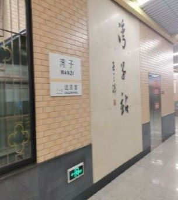

北京之旅  图1：地铁站 刚到北京时 从湾子站下地铁 这里是旅程的起点 所有关于北京的 美好的记忆 从这里开始 图2：什刹海后海 什刹海的夜晚 宁静而又有烟火气： 路上的行人 街边的小摊和饭店 数不清的酒馆 是独属于后海的风景 图3：故宫一角 故宫周围 总是人山人海 太和殿、中和殿、保和殿 俗称故宫三大殿 故宫的一角虽不似主殿宏伟壮观 却也有其独特的古典之美 图4：八达岭长城 清晨一早出发 坐车数小时只为登长城 自然的美景 总是有着无限吸引力 游览长城 如同阅览一部中国人民的史诗
武汉之旅 图1:湖北剧院 疫情暂停营业后的重新营业 地址： 武昌区西厂口1号 图2：长江大桥夜景 夜晚有灯光秀 临近户部巷、司门口 是观夜景的不错选择 图3：辛亥革命纪念馆 著名的红色景点 图4:K11商场 三大核心元素：艺术.人文.自然
花园口黄河滩 虽然如今的花园口已经成为有名的风景区，但其背后的历史不应被忘记 花园口决堤又称花园口惨案，是中国抗战史上与文夕大火、重庆防空洞惨案并称的三大惨案之一。1938年6月9日，蒋介石政府为阻止日军西进采取了“以水代兵”的办法，下令扒开位于河南省郑州市的黄河南岸的渡口——花园口，造成人为的黄河决堤改道。上千万人流离失所，形成大片此后连年灾害的黄泛区，并且间接导致惨绝人寰的1942河南大饥荒。